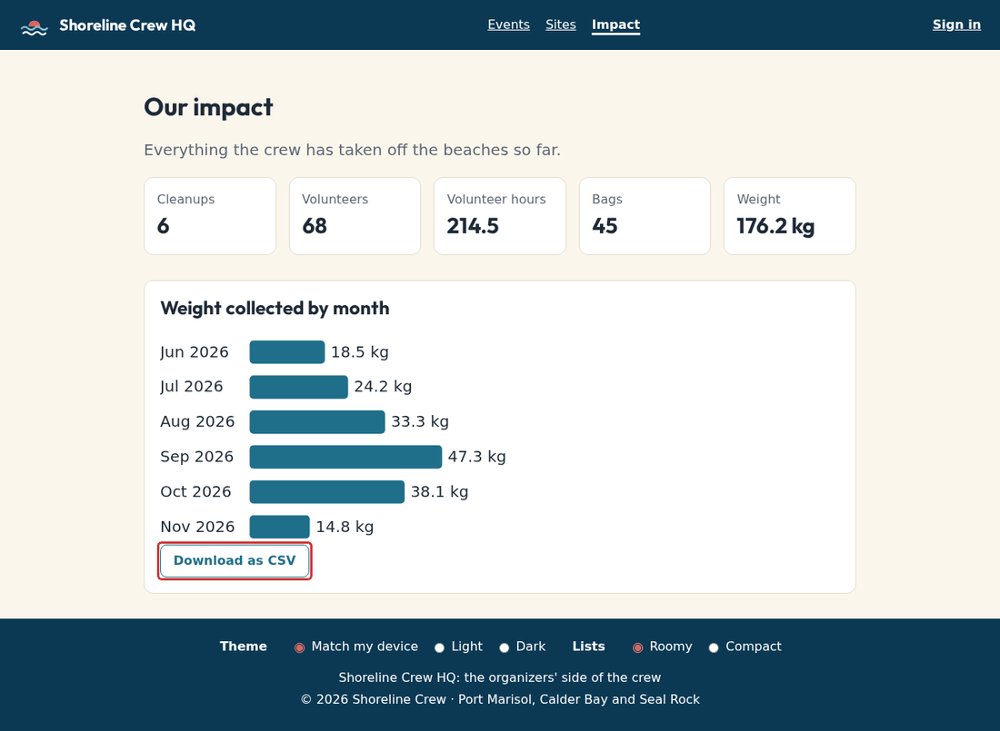
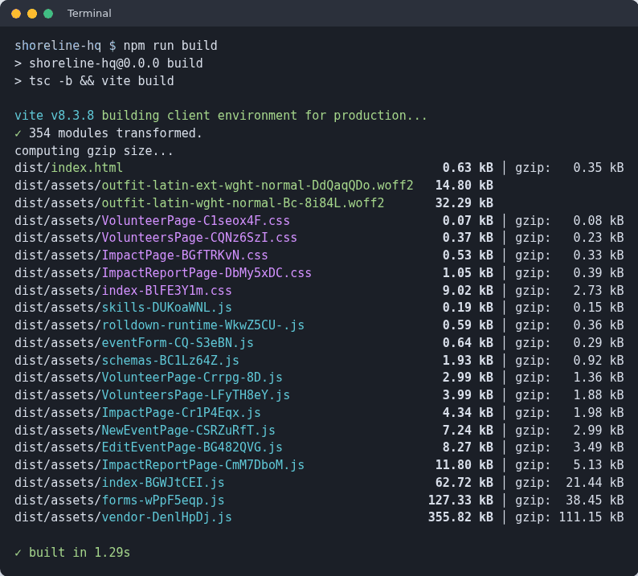

📦 Lesson 10.1: Performance and the Build
Since Lesson 8.1 every build has ended with the same yellow warning, and your e2e runs have printed it too. Today you deal with it properly. You read what Vite actually produces, measure what a guest downloads (the whole HQ, organizer forms included, 581.69 kB of JavaScript just to see the home page), look inside that file, and then split it so each visitor gets the code their visit needs. Module 10 is about shipping, and a fast first visit is part of what you ship.
🎯 Learning Objectives
By the end of this lesson, you will be able to:
- Read Vite 8's build output (chunks, sizes, gzip, hashed names) and explain what its 500 kB warning is telling you
- Measure the JavaScript a visitor downloads, and find what is inside a bundle with a treemap
- Split a React Router app with typed
lazyroutes, and useReact.lazywithSuspensefor a component - Shape the build's files with Rolldown's
codeSplittinggroups for better caching, without pulling lazy code back in - Protect the result with an end-to-end size budget, and add a typed, safe CSV export to the Impact page
📦 Code for this lesson
Starting code: lesson-32-start.zip · Finished code: lesson-32-end.zip. Each folder has a README with the commands to run it.
In This Lesson
🏗️ What the Build Makes
Since Lesson 1.2, npm run build has meant tsc -b && vite build. The first half only checks types; it produces nothing. The second half is where your app becomes files a browser can load. Vite 8 hands that work to Rolldown, its bundler: it starts at index.html, follows every import from main.tsx through your components into node_modules, strips the types, drops code nothing uses (tree shaking), minifies what is left and writes the result to dist/. Here is the end of the HQ's build at the start of this lesson:
Expected output (shortened, from npm run build)
✓ 352 modules transformed.
...
dist/assets/index-B-Vm3u1y.js 581.69 kB │ gzip: 182.31 kB
...
(!) Some chunks are larger than 500 kB after minification. Consider:
- Using dynamic import() to code-split the application
- Use build.rolldownOptions.output.codeSplitting to improve chunking: https://rolldown.rs/reference/OutputOptions.codeSplitting
- Adjust chunk size limit for this warning via build.chunkSizeWarningLimit.
✓ built in 1.31s- One JavaScript file,
index-hash.js: React, React DOM, React Router, TanStack Query, Zustand, React Hook Form, Zod and every one of your components, minified into a single file. The hash in its name changes whenever its content changes, so a browser can keep it cached forever and still never use an old copy after you deploy. - Two sizes. The first is the file on disk. The
gzipsize is roughly what travels over the network when the server compresses it, as most hosts do. Both matter: the network carries the smaller number, but the phone still has to parse and run the bigger one. - The warning is Vite's rule of thumb: one chunk over 500 kB (after minifying, before compression) usually means everyone downloads code they do not need. It suggests
import()andcodeSplitting, which is exactly this lesson. It is a warning, not an error: the build still worked.
💡 Mental model: packing the crew van
Right now the HQ is a crew that loads every piece of gear into the van for every trip: the check-in clipboards, the kayaks for the harbor cleanup, the scales for weighing bags, even when the trip is "drive past the beach and look at the schedule". Code splitting is packing a basic kit that goes on every trip, plus labeled boxes that are fetched when a job needs them. The work is deciding what goes in which box, and the labels have to be good enough that the right box arrives in time.
Why the fuss about bytes? JavaScript is the most expensive thing a page can download: after the transfer, the browser has to parse it, compile it and run it before the page responds, and on a mid-range phone that work takes noticeably longer than on your laptop. A picture of the same size only has to be decoded. Smaller JavaScript for the first visit is one of the few performance wins that helps every visitor, on every device.
📏 Measure What a Visitor Downloads
The build table lists files. What you care about is what each kind of visitor actually downloads, and that is a measurement, like the render counts in Lesson 5.3. In the browser, open the developer tools (F12, or Ctrl+Shift+I; ⌘ Cmd+Option+I on a Mac), choose the Network tab, tick Disable cache, filter to JS and reload. Each row is one file; the bar at the bottom adds them up, both as "transferred" (compressed on the way) and as "resources" (the size the build table prints). Use npm run preview for this, never the dev server: in development Vite serves hundreds of separate unbundled modules, which tells you nothing about the build.
The course measured the same thing with Playwright in Chromium against vite preview, for four kinds of visits (sizes as the build table prints them, before compression):
| Visit | JavaScript files | kB |
|---|---|---|
| A guest opens the home page | 1 | 581.69 |
| A guest clicks through Events, Sites, Impact and one cleanup | 1 | 581.69 |
| Maya opens Plan a cleanup | 1 | 581.69 |
| Maya opens every organizer page | 1 | 581.69 |
Everyone pays the same: the guest who only checks the next cleanup's date downloads the edit form, the impact report form and the libraries behind them. Lesson 8.1 measured Zod alone at about 103 kB minified, and Lesson 8.1's decision to keep the API's response checks out of Zod was made for exactly this lesson: the form libraries could be left behind for guests. Keep this table; you will fill the "after" column in Step 7.
🔍 Look Inside the Bundle
Before you cut anything, look. A bundle analyzer draws the build as a treemap: one rectangle per file, divided into a box per package and per module, each box's area matching its size. rollup-plugin-visualizer is the long-standing choice and supports Rolldown, so it works with Vite 8 (Step 2 sets it up so that it only runs when you ask for it). This is the HQ at the start of the lesson:

Three things to read in any treemap:
- The biggest boxes. React DOM is about two fifths of everything. That one is the price of using React and stays. React Router and TanStack Query are needed on every page too.
- Who needs each box. React Hook Form and Zod are big, and only three organizer pages use them. That is the code to move out of the way.
- Surprises. A library you did not know you used, the same package twice, a whole icon set for three icons. The HQ has none, thanks to choices made along the way (a hand-written chart, no date library).
The sizes in the treemap are measured before minification, so they are bigger than the build table's numbers. Use the treemap for proportions and "what is in here?", and the build table for the real file sizes.
✂️ Lazy Routes: Split by Who Needs It
The tool that splits code is JavaScript's own dynamic import. A normal import at the top of a file is static: the bundler puts that module in the same file as its importer. import('./pages/NewEventPage.tsx') is a function call that returns a Promise of the module, and Rolldown answers it with a separate file, downloaded the first time the call runs. TypeScript knows the module's exports, so the promise is fully typed.
React Router 8's data routers take that call through a route's lazy property: an async function that returns the parts of the route that can wait, here the page component.
{
path: 'events/new',
lazy: async () => {
const { NewEventPage } = await import('./pages/NewEventPage.tsx')
return { Component: NewEventPage }
},
},Component, notelement. The function hands over the component itself, and the router creates the element when it renders the route. Returning{ element: <NewEventPage /> }works as well; handing over the component is the shorter habit.- The import must stay the only one. If any file that every page loads still imports
NewEventPagestatically, Rolldown keeps it in the main file and the split silently does nothing. That is why Step 3 deletes the oldimportlines. - Types.
lazyis checked againstRouteObject: return{ Componnt: … }with a typo andtsc -breports it. You cannot return apathorchildrenfrom it either: what the route matches must be known before its code arrives.
The best part is what the router does with it. When a person clicks a link, it starts the route's loaders and downloads the route's file at the same time, and shows the page when both are done (the "Loading…" pill from Lesson 6.3 covers the wait):
Measured (a Playwright check in the course's verification, Chromium against vite preview): the Impact page's file was requested before the /api/impact answer arrived. No waiting in line.
⚠️ Splitting is for speed, not for secrets
Because the router fetches the file while the loaders run, a guest who opens a shared link such as /events/e08/edit downloads the edit page's file (and the form libraries) while organizersOnly decides, and then sees the sign-in page. Measured: 557.32 kB in 7 files for that visit. That is fine, because nothing in front-end code is secret: anyone can read every file the build produces. The guards decide what a person sees, and shoreline-api decides what anyone may do. Never put a secret, a key or a "hidden" admin feature in the app and rely on splitting to protect it.
🧩 React.lazy for a Component
Not every heavy part of a page is a route. React's own lazy loads a component the first time it renders, and a <Suspense> boundary (Lesson 4.4) shows a fallback until its file arrives:
import { useSuspenseQuery } from '@tanstack/react-query'
import { lazy, Suspense } from 'react'
// ...
// The chart's code arrives in its own file, the first time the page draws it.
// React.lazy wants a module with a default export, so name the one this file exports.
const ImpactChart = lazy(async () => {
const { ImpactChart } = await import('../components/ImpactChart.tsx')
return { default: ImpactChart }
})
// ...
<Card title="Weight collected by month">
<Suspense fallback={<p role="status">Loading the chart…</p>}>
<ImpactChart months={impact.byMonth} />
</Suspense>React.lazyexpects a promise of a module with a default export. The HQ uses named exports, so the function imports the module and hands back{ default: ImpactChart }. Inside, the destructuredImpactChartis the real component; the outer one is the lazy wrapper with the same props type.- Call
lazyat the top level of a file, never inside a component: a new lazy component on every render would load and reset again and again. - The difference from route
lazyis when the download starts: only when React renders the component, after the page's data has arrived. That is a waterfall (data, then code), and Exercise 1 measures it.
When do you need it in a data-router app? For a heavy widget inside a page that is already loaded: a charting library, a rich-text editor, a map, a dialog that few people open. For whole pages, the route's lazy is the better fit. In apps without a data router (and in most older tutorials) you will see React.lazy used for every page with one big <Suspense> around the routes; it works, with the waterfall.
📦 Shaping Files with codeSplitting Groups
Dynamic imports decide when code loads. Rolldown's output.codeSplitting option decides which file a module lands in. Each group has a name and a test (a string, a regular expression or a function on the module's path), and every module that passes the test goes into the file with that name. The HQ uses two:
build: {
rolldownOptions: {
output: {
codeSplitting: {
groups: [
{
// What every page needs: one file that stays cached when only the HQ's own code changes
name: 'vendor',
test: /node_modules[\\/](react|react-dom|scheduler|react-router|@tanstack|zustand)[\\/]/,
},
{
// Only the organizer forms import these, so only they load this file
name: 'forms',
test: /node_modules[\\/](zod|react-hook-form|@hookform)[\\/]/,
},
],
},
},
},
},vendorcollects the libraries every page needs. The bytes do not change, but the caching does: when you fix a typo in the HQ, only the smallindexfile gets a new name, and a returning organizer's browser reuses the 356 kBvendorfile it already has. Step 5 measures it.formsgives Zod and React Hook Form one clearly named file. Without it, Rolldown names shared files after a module inside them, and the HQ's form libraries came out asschemas-…jsandzod-…js, where the one calledzodheld React Hook Form (Step 3). A name you choose is one you can test (Step 6).- A group does not change when its file loads.
formsis still only imported by the lazy organizer pages, so only they load it. But a group that catches a module the main file needs makes the main file load the whole group: Common Mistakes shows a one-line "vendor" group that quietly sends Zod to every guest again. [\\/]matches both/and\, so the same test works on Windows paths.
🧩 Version note: manualChunks in older tutorials
Tutorials written for Vite 7 and earlier (which bundled with Rollup) split vendors with build.rollupOptions.output.manualChunks: { vendor: ['react', 'react-dom'] }. In Vite 8, rollupOptions is a deprecated alias of rolldownOptions, Rolldown supports only the function form of manualChunks and marks that deprecated too, and the object form fails (Common Mistakes). Use codeSplitting.groups.
⚠️ Common Mistakes
⚠️ Silencing the warning instead of reading it
build.chunkSizeWarningLimit: 1000 in vite.config.ts makes the yellow text go away and changes nothing a visitor downloads. Raise the limit only after you have looked at the treemap and decided the big file is right (an app that really needs a large library on every page). Even then, keep it a little above your current size, so the warning means "something new and big just arrived".
⚠️ The old manualChunks object
build: {
rollupOptions: {
output: {
manualChunks: {
vendor: ['react', 'react-dom', 'react-router'],
},
},
},
},Copied from an older tutorial, measured with npx tsc -b (the last lines of the error, which are the ones to read):
Expected output (shortened)
vite.config.ts:8:29 - error TS2769: No overload matches this call.
...
Types of property 'manualChunks' are incompatible.
Type '{ vendor: string[]; }' is not assignable to type 'ManualChunksFunction'.
Type '{ vendor: string[]; }' provides no match for the signature '(moduleId: string, meta: { getModuleInfo: (moduleId: string) => ModuleInfo | null; }): string | NullValue<void>'.and npx vite build stops with Rolldown's own message:
Expected output (shortened)
Warning: Invalid output options (1 issue found)
- For the "manualChunks". Invalid type: Expected Function but received Object.
...
✗ Build failed in 1.22s
...
TypeError: manualChunks is not a functionTypeScript read the config as you wrote it and found that manualChunks must be a function now. Move the idea to codeSplitting.groups as in "Shaping Files".
⚠️ A "vendor" group that catches everything
{ name: 'vendor', test: /node_modules[\\/]/ },One line, and every package lands in one file. Measured with the lazy routes still in place:
Expected output (shortened, from npx vite build)
dist/assets/index-CDLAbaOo.js 62.72 kB │ gzip: 21.37 kB
...
dist/assets/vendor-CUGVkuZG.js 483.56 kB │ gzip: 149.12 kBThe organizer pages are still lazy, but Zod and React Hook Form now live in vendor, which the main file needs for React, so every guest downloads them again. No forms file exists, so a test that only looked for that name would pass. Step 6's budget test also counts bytes, and caught it:
Expected output (shortened, from npx playwright test e2e/bundle.spec.ts)
Error: expect(received).toBeLessThan(expected)
Expected: < 440000
Received: 551230⚠️ React.lazy with a named export
const ImpactChart = lazy(() => import('../components/ImpactChart.tsx'))Measured with npx tsc -b:
Expected output (shortened)
src/pages/ImpactPage.tsx:14:32 - error TS2322: Type 'Promise<typeof import("/Users/you/shoreline/shoreline-hq/src/components/ImpactChart")>' is not assignable to type 'Promise<{ default: ComponentType<any>; }>'.
Property 'default' is missing in type 'typeof import("/Users/you/shoreline/shoreline-hq/src/components/ImpactChart")' but required in type '{ default: ComponentType<any>; }'.
14 const ImpactChart = lazy(() => import('../components/ImpactChart.tsx'))
~~~~~~~~~~~~~~~~~~~~~~~~~~~~~~~~~~~~~~~Read the bottom line: the module has an ImpactChart export, and lazy wants a default. Return { default: ImpactChart } from your own async function, as in "React.lazy for a Component". (Adding export default to the component file also works; the HQ keeps one style of export.)
⚠️ The object form of lazy and shared routes
React Router's documentation also shows an object form, one function per property: lazy: { Component: async () => (await import('./pages/EditEventPage.tsx')).EditEventPage }. It works in the browser. Measured with React Router 8.5.1 in the HQ's tests, where every test builds a new memory router from the same routes array (Lesson 9.2):
Expected output (shortened, from npx vitest run src/pages/EditEventPage.test.tsx)
✓ saves new details and shows the cleanup 262ms
× shows the form's own message and sends nothing 1011ms
× puts the API's message under the field when its rules say no 1006ms
...
TestingLibraryElementError: Unable to find a label with the text of: Title (5 to 80 characters)
...
Tests 2 failed | 1 passed (3)The first test passes; the next ones find an empty page. After loading, the router clears the property it loaded from the lazy object, and that object is shared by every router made from the array, so the second router has nothing left to load. The function form (the one this lesson uses) does not share anything that way, and all 49 tests pass with it.
🛠️ Project: A Lighter HQ
Step 1 records the starting point, Step 2 draws the treemap, Steps 3 to 5 split the build, add the CSV export and shape the files, Step 6 turns the result into a test, and Step 7 measures again. Keep shoreline-api running in its own terminal.
Step 1: The starting point (8 min)
Build the HQ and keep the numbers (you noted them after Lesson 9.3 too):
npm run buildYou should see the table and warning from "What the Build Makes": one JavaScript file of about 581.69 kB. Then run npm run preview, open http://localhost:4173, and look at the Network tab as described in "Measure What a Visitor Downloads": one JavaScript file on the home page, and no new one when you click through the pages, because there is nothing else to load. Write the size in your notes next to "guest, home page". Stop the preview with Ctrl+C.
Step 2: A treemap on request (10 min)
Install the analyzer as a development dependency:
npm install --save-dev rollup-plugin-visualizerExpected output
added 14 packages, and audited 211 packages in 814ms
58 packages are looking for funding
run `npm fund` for details
found 0 vulnerabilitiesThe course was checked with version 7.1.3. You only want the analysis when you ask for it, so the plugin runs in a build mode of its own. Vite's defineConfig also accepts a function that receives the mode; change these lines in vite.config.ts:
import react, { reactCompilerPreset } from '@vitejs/plugin-react'
import babel from '@rolldown/plugin-babel'
+import { visualizer } from 'rollup-plugin-visualizer'
import { defineConfig } from 'vite'
// https://vite.dev/config/
-export default defineConfig({
+export default defineConfig(({ mode }) => ({
plugins: [
react(),
// The React Compiler: works out what each component can reuse between renders
babel({ presets: [reactCompilerPreset()] }),
+ // `npm run analyze` only: a map of every chunk and what is inside it (dist/stats.html)
+ mode === 'analyze' && visualizer({ filename: 'dist/stats.html', gzipSize: true }),
],and the closing }) at the end of the file becomes })). mode === 'analyze' && visualizer(…) is false in every other mode, and Vite skips false in the plugin list; TypeScript is happy with it because the plugin list's type allows false. Now a script in package.json:
"dev": "vite",
"build": "tsc -b && vite build",
+ "analyze": "vite build --mode analyze",
"lint": "oxlint",
"preview": "vite preview",npm run analyze
npm run previewThe analyze build prints the same table (and the same warning) and also writes dist/stats.html; open http://localhost:4173/stats.html and you see the treemap from "Look Inside the Bundle". Hover a box for its sizes, click one to zoom in. Find React Hook Form and Zod, and say out loud who needs them. A normal npm run build empties dist/ first, so the report never ships with your app.
Step 3: Lazy organizer pages (15 min)
Replace src/routes.tsx with this version. Six page imports at the top are gone; the six routes get a lazy function instead of an element:
// Every address the HQ knows, and the page it shows there. App.tsx gives these routes to the
// browser's router; the tests give the same ones to a router in memory (Lesson 9.2).
// Pages with `lazy` are separate files in the build: downloaded the first time someone opens them.
import type { RouteObject } from 'react-router'
import { guestsOnly, onlyWhenThePathChanges, organizersOnly } from './auth/guards.ts'
import { signInAction } from './auth/signInAction.ts'
import { AppLayout } from './components/AppLayout.tsx'
import { ErrorPage } from './pages/ErrorPage.tsx'
import { EventPage } from './pages/EventPage.tsx'
import { EventsPage } from './pages/EventsPage.tsx'
import { HomePage } from './pages/HomePage.tsx'
import {
editEventLoader,
eventLoader,
impactLoader,
impactReportLoader,
sitesLoader,
} from './pages/loaders.ts'
import { NotFoundPage } from './pages/NotFoundPage.tsx'
import { SignInPage } from './pages/SignInPage.tsx'
import { SitesPage } from './pages/SitesPage.tsx'
export const routes: RouteObject[] = [
{
path: '/',
element: <AppLayout />,
// Shown on the very first load while the first page's loaders fetch its data
hydrateFallbackElement: <p role="status">Loading Shoreline Crew HQ…</p>,
children: [
{
// A route without a path: it adds the error page and keeps the layout around it
errorElement: <ErrorPage />,
children: [
{ index: true, element: <HomePage /> },
{ path: 'events', element: <EventsPage /> },
{ path: 'events/:eventId', element: <EventPage />, loader: eventLoader },
{ path: 'sites', element: <SitesPage />, loader: sitesLoader },
{
path: 'impact',
loader: impactLoader,
// The chart and the CSV export: most visitors never open this page
lazy: async () => {
const { ImpactPage } = await import('./pages/ImpactPage.tsx')
return { Component: ImpactPage }
},
},
{ path: 'sign-in', element: <SignInPage />, loader: guestsOnly, action: signInAction },
{
// Organizers only: this guard runs before any of these pages appears.
// Their code (and Zod and React Hook Form with it) stays out of the main bundle.
loader: organizersOnly,
shouldRevalidate: onlyWhenThePathChanges,
children: [
{
path: 'events/new',
lazy: async () => {
const { NewEventPage } = await import('./pages/NewEventPage.tsx')
return { Component: NewEventPage }
},
},
// A child loader runs in parallel with the guard's: editEventLoader checks again first
{
path: 'events/:eventId/edit',
loader: editEventLoader,
lazy: async () => {
const { EditEventPage } = await import('./pages/EditEventPage.tsx')
return { Component: EditEventPage }
},
},
{
path: 'events/:eventId/impact',
loader: impactReportLoader,
lazy: async () => {
const { ImpactReportPage } = await import('./pages/ImpactReportPage.tsx')
return { Component: ImpactReportPage }
},
},
{
path: 'volunteers',
lazy: async () => {
const { VolunteersPage } = await import('./pages/VolunteersPage.tsx')
return { Component: VolunteersPage }
},
// Nested routes: they render inside VolunteersPage, at its <Outlet />
children: [
{ index: true, element: <p>Pick a name from the list to see their details.</p> },
{
path: ':volunteerId',
lazy: async () => {
const { VolunteerPage } = await import('./pages/VolunteerPage.tsx')
return { Component: VolunteerPage }
},
},
],
},
],
},
{ path: '*', element: <NotFoundPage /> },
],
},
],
},
]- The five organizer pages are lazy, the three form pages and the two volunteer pages. The guard route around them stays exactly as it was: it still decides who may see them.
- The Impact page is lazy too: it is the one public page most visitors never open, and it carries the chart and, after Step 4, the CSV export. The home, events, cleanup, sites and sign-in pages are what nearly every visit uses, so they stay in the main file.
- Loaders stay static. They are small, and the router needs them right away; the guards in particular must never wait for a download.
Run npx tsc -b and npx vitest run (all 46 tests pass: the tests use the same route array, and their findBy queries wait for the lazy pages), then build:
Expected output (shortened, from npm run build)
dist/assets/skills-DUKoaWNL.js 0.19 kB │ gzip: 0.15 kB
dist/assets/eventForm-CQ-S3eBN.js 0.64 kB │ gzip: 0.29 kB
dist/assets/VolunteerPage-DVX5Hljb.js 2.99 kB │ gzip: 1.37 kB
dist/assets/ImpactPage-87T7yXE3.js 3.47 kB │ gzip: 1.53 kB
dist/assets/VolunteersPage-D7UNACnc.js 3.99 kB │ gzip: 1.88 kB
dist/assets/NewEventPage-Cr52s7xQ.js 7.16 kB │ gzip: 2.95 kB
dist/assets/EditEventPage-BHmqh-6o.js 8.26 kB │ gzip: 3.49 kB
dist/assets/ImpactReportPage-DvpdROyR.js 11.77 kB │ gzip: 5.08 kB
dist/assets/zod-5nNH51dj.js 43.36 kB │ gzip: 14.91 kB
dist/assets/queries-BNoIjay4.js 50.03 kB │ gzip: 15.57 kB
dist/assets/schemas-Bnx64Hq0.js 85.44 kB │ gzip: 24.68 kB
dist/assets/index-dItvpBVM.js 369.11 kB │ gzip: 117.66 kB
✓ built in 1.29sThe warning is gone, and each lazy page has its own file. Rolldown also made a few shared files on its own and named each after a module inside it: queries holds code that both the main file and the Impact page use (TanStack Query among it), and the form libraries landed in schemas and zod (the one called zod holds React Hook Form). A guest now downloads index plus queries: 419.15 kB, measured. Step 5 replaces the guessed names with ones you choose.
Step 4: Export the monthly totals as CSV (15 min)
Organizers have asked since the Impact page appeared for a way to put its numbers in a spreadsheet for the town council. A CSV file (comma-separated values) is plain text that every spreadsheet opens: a heading line, then one line per row. Create src/utils/csv.ts:
// Turning rows of data into a CSV file that spreadsheets open (Lesson 10.1)
/** One column of the file: its heading, and how to read its value from a row */
export interface CsvColumn<Row> {
heading: string
value: (row: Row) => string | number
}
// A text cell starting with = + - @ could run as a formula when the file is opened in a
// spreadsheet ("CSV injection"): a ' in front makes the spreadsheet show it as plain text.
function cell(value: string | number): string {
if (typeof value === 'number') return String(value)
const text = /^[=+\-@\t\r]/.test(value) ? `'${value}` : value
// Commas, quotes and line breaks are allowed inside "…", with each " doubled
return /[",\r\n]/.test(text) ? `"${text.replaceAll('"', '""')}"` : text
}
/** A heading line, then one line per row (CRLF line endings, as the CSV standard says) */
export function toCsv<Row>(rows: readonly Row[], columns: readonly CsvColumn<Row>[]): string {
const lines = [
columns.map((column) => cell(column.heading)),
...rows.map((row) => columns.map((column) => cell(column.value(row)))),
]
return lines.map((line) => line.join(',')).join('\r\n') + '\r\n'
}
/** Hands the text to the browser as a file download */
export function downloadCsv(fileName: string, csv: string): void {
const url = URL.createObjectURL(new Blob([csv], { type: 'text/csv;charset=utf-8' }))
const link = document.createElement('a')
link.href = url
link.download = fileName
link.click()
URL.revokeObjectURL(url)
}- A generic type with a callback.
CsvColumn<Row>describes one column for any row type;toCsv<Row>takes rows and columns of the sameRow, so a column that reads a property the rows do not have is a type error (Lesson 2.3's generics, at work). - Quoting. A value with a comma, a quotation mark or a line break goes inside
"…"with each"doubled, as the CSV format (RFC 4180) says. Lines end with\r\nfor the same reason. - The download needs no server: a
Blobholds the text,URL.createObjectURLgives it a temporary address, and a link with adownloadattribute that is clicked in code saves it under that file name.
🛑 CSV files can carry formulas
Spreadsheets treat a cell that starts with =, +, - or @ as a formula. If a volunteer typed =HYPERLINK("http://example.com","Click") into a note and an organizer exported it, opening the file could run it. This is called CSV injection (or formula injection). cell() puts a ' in front of such text, which spreadsheets show as plain text. Numbers are left alone, so -1 stays a number. Today's export only has months and numbers, but toCsv will be reused for text, and safe by default is cheaper than remembering later.
Three unit tests pin those rules down. Create src/utils/csv.test.ts:
import { describe, expect, it } from 'vitest'
import { toCsv, type CsvColumn } from './csv.ts'
interface Bag {
site: string
kg: number
}
const columns: CsvColumn<Bag>[] = [
{ heading: 'Site', value: (bag) => bag.site },
{ heading: 'Weight (kg)', value: (bag) => bag.kg },
]
describe('toCsv', () => {
it('writes a heading line and one line per row', () => {
expect(toCsv([{ site: 'North Jetty', kg: 12.5 }], columns)).toBe('Site,Weight (kg)\r\nNorth Jetty,12.5\r\n')
})
it('quotes commas and doubles quotation marks', () => {
expect(toCsv([{ site: 'Cove, "south" end', kg: 3 }], columns)).toContain('"Cove, ""south"" end",3')
})
it('stops text from running as a spreadsheet formula, but keeps negative numbers', () => {
const csv = toCsv([{ site: '=HYPERLINK("http://example.com")', kg: -1 }], columns)
expect(csv).toContain(`"'=HYPERLINK(""http://example.com"")",-1`)
})
})Then the button on the Impact page. Change these lines in src/pages/ImpactPage.tsx:
import { useSuspenseQuery } from '@tanstack/react-query'
import { impactTotalsQuery } from '../api/queries.ts'
+import type { ImpactTotals } from '../api/types.ts'
+import { Button } from '../components/Button.tsx'
import { Card } from '../components/Card.tsx'
import { ImpactChart } from '../components/ImpactChart.tsx'
import { useDocumentTitle } from '../hooks/useDocumentTitle.ts'
+import { downloadCsv, toCsv, type CsvColumn } from '../utils/csv.ts'
import styles from './ImpactPage.module.css'
import pageStyles from './Page.module.css'
+
+// The columns of the monthly export: the row type comes from the API's ImpactTotals
+const monthColumns: CsvColumn<ImpactTotals['byMonth'][number]>[] = [
+ { heading: 'Month', value: (month) => month.month },
+ { heading: 'Cleanups', value: (month) => month.events },
+ { heading: 'Weight (kg)', value: (month) => month.weightKg },
+]
// The crew's dashboard: what every completed cleanup adds up to (impactLoader filled the cache) useDocumentTitle('Our impact')
const { data: impact } = useSuspenseQuery(impactTotalsQuery())
+
+ function downloadMonths() {
+ downloadCsv('shoreline-impact-by-month.csv', toCsv(impact.byMonth, monthColumns))
+ }
return ( <Card title="Weight collected by month">
<ImpactChart months={impact.byMonth} />
+ <Button onClick={downloadMonths}>Download as CSV</Button>
</Card>
</>ImpactTotals['byMonth'][number] is "one item of the API's byMonth list" (Lesson 7.1 used the same indexed access type for the chart), so the column callbacks know month.month, month.events and month.weightKg, and TypeScript infers Row when toCsv is called. Run the new tests:
npx vitest run src/utils/csv.test.tsExpected output
RUN v5.1.0 /Users/you/shoreline/shoreline-hq
✓ src/utils/csv.test.ts (3 tests) 10ms
✓ toCsv (3)
✓ writes a heading line and one line per row 3ms
✓ quotes commas and doubles quotation marks 2ms
✓ stops text from running as a spreadsheet formula, but keeps negative numbers 1ms
Test Files 1 passed (1)
Tests 3 passed (3)
Start at 02:11:01
Duration 548ms (environment 64%, setup 27%, transform 6%, tests 2%, worker 1%)Build, preview, and try the button: the browser saves shoreline-impact-by-month.csv, which opens as a three-column table in any spreadsheet.

Step 5: Name the files that stay (8 min)
Add the build block from "Shaping Files" to vite.config.ts, between plugins and test:
],
build: {
rolldownOptions: {
output: {
codeSplitting: {
groups: [
{
// What every page needs: one file that stays cached when only the HQ's own code changes
name: 'vendor',
test: /node_modules[\\/](react|react-dom|scheduler|react-router|@tanstack|zustand)[\\/]/,
},
{
// Only the organizer forms import these, so only they load this file
name: 'forms',
test: /node_modules[\\/](zod|react-hook-form|@hookform)[\\/]/,
},
],
},
},
},
},
// Vitest reads the same file, so tests run the code exactly as the app's build doesnpm run build
Expected output (shortened)
dist/assets/skills-DUKoaWNL.js 0.19 kB │ gzip: 0.15 kB
dist/assets/rolldown-runtime-WkwZ5CU-.js 0.59 kB │ gzip: 0.36 kB
dist/assets/eventForm-CQ-S3eBN.js 0.64 kB │ gzip: 0.29 kB
dist/assets/schemas-BC1Lz64Z.js 1.93 kB │ gzip: 0.92 kB
dist/assets/VolunteerPage-Crrpg-8D.js 2.99 kB │ gzip: 1.36 kB
dist/assets/VolunteersPage-LFyTH8eY.js 3.99 kB │ gzip: 1.88 kB
dist/assets/ImpactPage-Cr1P4Eqx.js 4.34 kB │ gzip: 1.98 kB
dist/assets/NewEventPage-CSRZuRfT.js 7.24 kB │ gzip: 2.99 kB
dist/assets/EditEventPage-BG482QVG.js 8.27 kB │ gzip: 3.49 kB
dist/assets/ImpactReportPage-CmM7DboM.js 11.80 kB │ gzip: 5.13 kB
dist/assets/index-BGWJtCEI.js 62.72 kB │ gzip: 21.44 kB
dist/assets/forms-wPpF5eqp.js 127.33 kB │ gzip: 38.45 kB
dist/assets/vendor-DenlHpDj.js 355.82 kB │ gzip: 111.15 kB
✓ built in 1.31sZod and React Hook Form now share one forms file (the small schemas file that is left is the HQ's own schemas.ts), queries is gone because its library code moved to vendor, and a guest's visit is index (the HQ's own code) plus vendor plus a tiny rolldown-runtime file, the glue Rolldown adds so the files can share modules. Vite also adds <link rel="modulepreload"> lines for the last two to dist/index.html, so the browser fetches all three at once instead of one after another. Now the caching claim, measured: change the tagline in src/pages/HomePage.tsx for a moment, build, and compare the names (the course changed "cleaner" to "clean"):
Expected output (the two lines that matter, from two builds)
# before the change
dist/assets/index-BGWJtCEI.js 62.72 kB │ gzip: 21.44 kB
dist/assets/vendor-DenlHpDj.js 355.82 kB │ gzip: 111.15 kB
# after changing the tagline
dist/assets/index-B0OsZI9M.js 62.71 kB │ gzip: 21.44 kB
dist/assets/vendor-DenlHpDj.js 355.82 kB │ gzip: 111.15 kBOnly index got a new name. After your fix, a returning visitor's browser downloads the new 63 kB index file and reuses the 356 kB vendor file from its cache. Put the tagline back.
Step 6: A budget the tests enforce (10 min)
Splitting is easy to undo by accident: one static import of an organizer page in a shared file and everything is back in the main file, with no error and no warning (the main file would still be under 500 kB). Lesson 9.3's Playwright suite is the safety net; give it a test that measures. Create e2e/bundle.spec.ts:
import { expect, test } from '@playwright/test'
import { resetApi } from './helpers.ts'
test.beforeEach(async ({ request }) => {
await resetApi(request)
})
test('a guest browsing the public pages stays within the JavaScript budget', async ({ page }) => {
// Every JavaScript file the HQ sends during this test, with its size in bytes
const scripts: Promise<{ file: string; bytes: number }>[] = []
page.on('response', (response) => {
const file = new URL(response.url()).pathname
if (file.startsWith('/assets/') && file.endsWith('.js')) {
scripts.push(response.body().then((body) => ({ file, bytes: body.length })))
}
})
await page.goto('/')
const nav = page.getByRole('navigation', { name: 'Main' })
for (const [link, heading] of [
['Events', 'Cleanup events'],
['Sites', 'Beach sites'],
['Impact', 'Our impact'],
]) {
await nav.getByRole('link', { name: link }).click()
await expect(page.getByRole('heading', { level: 1, name: heading })).toBeVisible()
}
const downloaded = await Promise.all(scripts)
// Zod and React Hook Form (the "forms" chunk) are for organizers only
expect(downloaded.filter((script) => script.file.startsWith('/assets/forms-'))).toEqual([])
// The budget: about 423 kB when this test was written, so a big new import shows up here
const total = downloaded.reduce((sum, script) => sum + script.bytes, 0)
expect(total).toBeLessThan(440_000)
})- Playwright's
responseevent fires for every file the page receives.response.body()returns aPromise, so the test collects promises and awaits them all at the end. - Two checks: no
formsfile (the name Step 5 chose), and a budget, the most JavaScript a guest's visit may use. About 423 kB today; 440 kB leaves room for normal growth, and anything bigger makes someone look. A budget fails on any cause, including ones you did not think of. - The list of
[link, heading]pairs needs no type annotation: TypeScript infersstring[][], and destructuring each pair in thefor…ofgives two strings.
And a test for the export, at the end of e2e/impact.spec.ts (plus an import { readFile } from 'node:fs/promises' at the top):
await expect(page.getByRole('definition').filter({ hasText: 'kg' })).toHaveText('194.7 kg')
})
+
+test('the impact page hands out its monthly totals as a CSV file', async ({ page }) => {
+ await page.goto('/impact')
+ const downloading = page.waitForEvent('download')
+ await page.getByRole('button', { name: 'Download as CSV' }).click()
+ const download = await downloading
+ expect(download.suggestedFilename()).toBe('shoreline-impact-by-month.csv')
+
+ // Playwright saved the file: read it like a spreadsheet would
+ const [heading, ...months] = (await readFile(await download.path(), 'utf8')).trimEnd().split('\r\n')
+ expect(heading).toBe('Month,Cleanups,Weight (kg)')
+ expect(months.length).toBeGreaterThan(0)
+ for (const month of months) expect(month).toMatch(/^\d{4}-\d{2},\d+,[\d.]+$/)
+})Playwright catches the download, saves it, and the test reads the file like a spreadsheet would. The months and their totals depend on today's date in the sample data, so the test checks the shape of each line, never a fixed count. Now prove the budget test can fail: in routes.tsx, put back import { NewEventPage } from './pages/NewEventPage.tsx' and { path: 'events/new', element: <NewEventPage /> } for a moment, and run it:
npx playwright test e2e/bundle.spec.tsExpected output (shortened)
Error: expect(received).toEqual(expected) // deep equality
- Expected - 1
+ Received + 6
- Array []
+ Array [
+ Object {
+ "bytes": 127265,
+ "file": "/assets/forms-CY-JD-zP.js",
+ },
...
> 31 | expect(downloaded.filter((script) => script.file.startsWith('/assets/forms-'))).toEqual([])
| ^One page made static, and every guest gets the forms file again, which the test names. Undo the change; the test passes.
Step 7: Everything, and measure again (5 min)
npx tsc -b
npm run lint
npx vitest run
npm run test:e2eExpected output (shortened, from npx vitest run and npm run test:e2e)
Test Files 13 passed (13)
Tests 49 passed (49)
...
Running 21 tests using 1 worker
...
✓ 17 e2e/bundle.spec.ts:8:1 › a guest browsing the public pages stays within the JavaScript budget (299ms)
...
✓ 20 e2e/impact.spec.ts:37:1 › the impact page hands out its monthly totals as a CSV file (148ms)
...
21 passed (13.8s)Every journey from Lesson 9.3 still passes, which means every lazy page still loads its code and works: that is the safety net doing its job. The build inside the e2e run no longer prints the 500 kB warning. Then repeat Step 1's Network measurement. The course's numbers, measured the same way as before:
| Visit | Before: files / kB | After: files / kB |
|---|---|---|
| A guest opens the home page | 1 / 581.69 | 3 / 419.14 |
| A guest clicks through Events, Sites, Impact and one cleanup | 1 / 581.69 | 4 / 423.48 |
| Maya opens Plan a cleanup | 1 / 581.69 | 7 / 556.29 |
| Maya opens every organizer page | 1 / 581.69 | 11 / 580.55 |
A guest's first visit is 162.55 kB (28 percent) lighter, and organizers download about what they did before, spread over more files that arrive when they open each page. React itself is now most of what is left, which is the honest floor for a React app.
✅ Project Completion Checklist
npm run analyzewritesdist/stats.html, and you found the form libraries in the treemap- The five organizer pages and the Impact page are
lazyroutes with typedComponentimports, and no static import of them is left vite.config.tshasvendorandformsgroups, and the build prints no 500 kB warning- The Impact page downloads the monthly totals as a CSV file built by the generic, formula-safe
toCsv e2e/bundle.spec.tsenforces the guest budget, you watched it fail once, and all 49 Vitest and 21 Playwright tests pass- Your notes have the before and after numbers for a guest's first visit
Your own project: for the app you will plan in Lesson 11.1, write down who its visitors are and which screens only some of them use. Those screens are your first lazy routes, and the visitor who uses the fewest screens is the one your budget test should follow.
🏋️ Hands-on Exercises
Exercise 1 is part of the lesson (about 7 minutes, included in the lesson time). Exercises 2 and 3 are optional stretches, not counted in the lesson time.
🏋️ Exercise 1: The chart on its own, measured
Load ImpactChart with React.lazy inside the Impact page, with a <Suspense> fallback "Loading the chart…". Build and find the chart's file in the table. Then decide with numbers: is a separate file worth it for this chart?
💡 Hint
Start from "React.lazy for a Component": remove the static import of ImpactChart, define the lazy one at the top level of ImpactPage.tsx, and wrap only the chart in <Suspense>, so the totals and the button never wait. To see the order of events, watch the Network tab: when is the chart's file requested, compared with /api/impact?
✅ Solution
import { useSuspenseQuery } from '@tanstack/react-query'
import { lazy, Suspense } from 'react'
import { impactTotalsQuery } from '../api/queries.ts'
import type { ImpactTotals } from '../api/types.ts'
import { Button } from '../components/Button.tsx'
import { Card } from '../components/Card.tsx'
import { useDocumentTitle } from '../hooks/useDocumentTitle.ts'
import { downloadCsv, toCsv, type CsvColumn } from '../utils/csv.ts'
import styles from './ImpactPage.module.css'
import pageStyles from './Page.module.css'
// The chart's code arrives in its own file, the first time the page draws it.
// React.lazy wants a module with a default export, so name the one this file exports.
const ImpactChart = lazy(async () => {
const { ImpactChart } = await import('../components/ImpactChart.tsx')
return { default: ImpactChart }
})
// ...
<Card title="Weight collected by month">
<Suspense fallback={<p role="status">Loading the chart…</p>}>
<ImpactChart months={impact.byMonth} />
</Suspense>
<Button onClick={downloadMonths}>Download as CSV</Button>
</Card>Expected output (shortened, from npx vite build)
dist/assets/ImpactChart-BU9j6zNR.js 1.31 kB │ gzip: 0.77 kB
...
dist/assets/ImpactPage-CT6dBY6l.js 3.77 kB │ gzip: 1.68 kBMeasured with a Playwright test (in the course's verification, not in the HQ): the chart's file is requested only after the /api/impact answer has arrived, the waterfall from "React.lazy for a Component". The verdict: the chart is a little over a kilobyte, it already arrives with the lazy Impact page, and splitting it again adds a second request after the data, plus a moment of "Loading the chart…". Not worth it here, so the HQ keeps the static import. With a charting library of 100 kB or more in that component, the same few lines would be a clear win. Measure, then decide.
🏋️ Exercise 2: Weight by beach site (optional stretch)
Optional stretch, not counted in the lesson time. Add a second button, "Download by beach site", that exports impact.bySite with the site's name (not its id), the number of cleanups and the weight. Reuse toCsv with a new row type.
💡 Hint
The names live in the sites query. Let impactLoader put both queries in the cache with Promise.all, then read the sites with useSuspenseQuery(sitesQuery()) in the page. The row type is ImpactTotals['bySite'][number]; sites.find(…)?.name ?? row.siteId falls back to the id if a site were ever missing.
✅ Solution
export async function impactLoader() {
await Promise.all([
queryClient.query({ ...impactTotalsQuery(), staleTime: 'static' }),
queryClient.query({ ...sitesQuery(), staleTime: 'static' }),
])
return null
}const { data: impact } = useSuspenseQuery(impactTotalsQuery())
const { data: sites } = useSuspenseQuery(sitesQuery())
function downloadMonths() {
downloadCsv('shoreline-impact-by-month.csv', toCsv(impact.byMonth, monthColumns))
}
function downloadSites() {
const siteColumns: CsvColumn<ImpactTotals['bySite'][number]>[] = [
{
heading: 'Beach site',
value: (row) => sites.find((site) => site.id === row.siteId)?.name ?? row.siteId,
},
{ heading: 'Cleanups', value: (row) => row.events },
{ heading: 'Weight (kg)', value: (row) => row.weightKg },
]
downloadCsv('shoreline-impact-by-site.csv', toCsv(impact.bySite, siteColumns))
}
// ...
<Card title="Weight collected by month">
<ImpactChart months={impact.byMonth} />
<Button onClick={downloadMonths}>Download as CSV</Button>{' '}
<Button onClick={downloadSites}>Download by beach site</Button>
</Card>Measured: type-checks, lints cleanly, and a Playwright test downloads shoreline-impact-by-site.csv with the heading Beach site,Cleanups,Weight (kg) and one line per site name. Not in the course's code.
🏋️ Exercise 3 (Stretch): Fetch the form before the click
Optional stretch, not counted in the lesson time. When Maya points at Plan a cleanup on the events page (or tabs to it), start downloading the form's file, so it is usually there by the time she clicks.
💡 Hint
Call the same import('./NewEventPage.tsx') in onPointerEnter and onFocus handlers. Rolldown makes one file for one module, however many places import it, and the browser fetches it once. void in front of the call says "I start this promise on purpose and do not wait for it". Prove it in Playwright with page.waitForRequest(…) around hover().
✅ Solution
// The same import() as the route's lazy function: the browser fetches the file once
function prefetchPlanForm() {
void import('./NewEventPage.tsx')
}<Button
as={Link}
to="/events/new"
variant="primary"
onPointerEnter={prefetchPlanForm}
onFocus={prefetchPlanForm}
>
Plan a cleanup
</Button>test('pointing at Plan a cleanup starts downloading its code', async ({ page }) => {
await signIn(page)
await page.getByRole('navigation', { name: 'Main' }).getByRole('link', { name: 'Events' }).click()
const planLink = page.getByRole('link', { name: 'Plan a cleanup' })
await expect(planLink).toBeVisible()
const formCode = page.waitForRequest((request) =>
new URL(request.url()).pathname.startsWith('/assets/NewEventPage-'),
)
await planLink.hover()
await formCode
await planLink.click()
await expect(page.getByRole('heading', { level: 1, name: 'Plan a cleanup' })).toBeVisible()
})Measured: type-checks, lints cleanly, and the test passes: the NewEventPage file is requested on hover, before the click. Not in the course's code.
🎯 Quick Quiz
🎯 Check Your Understanding
Question 1: npm run build prints "Some chunks are larger than 500 kB after minification". What is the best first step?
Question 2: A guest opens a shared link to /events/e08/edit. With the HQ's lazy routes, what happens?
Question 3: lazy(() => import('../components/ImpactChart.tsx')) gives a type error. Why?
Question 4: Why do React, React DOM, React Router and TanStack Query go into their own vendor group?
Question 5: A teammate replaces the two groups with { name: 'vendor', test: /node_modules[\\/]/ }. What does e2e/bundle.spec.ts report?
❓ Common Questions at This Stage
Do the lazy pages make things slower for organizers?
A little, the first time each page opens: one more request, made at the same time as the page's data, so it usually costs a few milliseconds on a good connection and more on a slow one. In return the first visit is faster for everyone, and each file is cached after its first download. Measured: opening every organizer page downloads about what one big file did before (580.55 kB in 11 files, against 581.69 kB in one). Exercise 3 shows how to start a download before the click when it matters.
Why not make every page lazy?
You could, and some teams do. Each lazy page is one more request on its first visit, and the HQ's public pages are small (a few kilobytes each) and used on nearly every visit, so splitting them would add requests and save almost nothing. Split where the bytes are and where the audience is narrow: whole areas for one kind of user, and heavy libraries. The treemap tells you where that is.
What about Lighthouse and the Core Web Vitals?
Lighthouse (in Chrome's developer tools) loads a page as a slow phone would and scores it; the Core Web Vitals are three measurements Google uses for real visits: how fast the main content appears (LCP), how fast the page answers a tap or key press (INP), and how much the layout jumps (CLS). Less JavaScript on the first visit helps the first two. Lighthouse numbers on localhost are rough; run it against the deployed HQ after Lesson 10.2 for numbers that mean more, and compare runs rather than chasing one score.
Why does the course report sizes before compression?
Because that number is the same everywhere: on disk, in the build table and in what the browser has to parse and run. What travels over the network is smaller: even vite preview sends JavaScript compressed with gzip (measured), and many hosts use the even smaller Brotli. Chrome's Network tab shows both, as "transferred" (compressed) and "resources" (uncompressed) in the bar at the bottom. When you compare before and after, use the same kind of number on both sides.
Did the React Compiler from Lesson 5.3 make the bundle bigger?
Slightly: Lesson 5.3 measured about 18.5 kB more JavaScript for the compiled components and its small runtime. That cost sits in the index file and is paid for in fewer renders. This lesson does not change it; splitting is about which visitor downloads which code, not about how components render.
🌟 Going Further: Bonus Challenge
Turn Vite's warning into your own budget. Set build.chunkSizeWarningLimit in vite.config.ts to a little above your largest file today (the vendor file, about 356 kB), then check what happens when you put one static import of EditEventPage back into routes.tsx. Which is the better guard, this warning or the e2e budget, and why might a team want both? Then try the visualizer's other views: template: 'network' answers "why is this module in this file?" by showing who imports it.
📓 Learning Journal
Take five to ten minutes and jot down:
- Key concepts you learned today
- Techniques that clicked (and the ones that have not, yet)
- Questions or confusion to look up or bring to the next session
- Ideas to try on your own
- Progress and feelings: how did this lesson go for you?
✍️ This lesson's prompt: Write down your before and after numbers for a guest's first visit, and the one change that made the biggest difference. Then think of a website you use on your phone that feels slow: what do you guess is in its treemap, and which of its screens would you split out first? Finally, look back at Lesson 5.3 and today: both started with "measure first". Where did a measurement change what you would have done on a hunch?
📝 Lesson Summary
🎓 Key Takeaways
vite buildbundles fromindex.htmlwith Rolldown: tree shaking, minifying, hashed file names; the table lists each file's size and gzip size, and the 500 kB warning means "everyone may be downloading code they do not need"- Measure what each kind of visitor downloads (Network tab on
vite preview), and look inside with a treemap before cutting import()creates a separate file; React Router'slazyloads a route's component in parallel with its loaders;React.lazy+Suspenseloads a component when it first renders (after the data, so a waterfall)codeSplitting.groupsdecide which file a module lands in, not when it loads: a stablevendorfile caches across deploys, and a catch-all group can pull lazy code back into every page- Splitting is for speed, never for secrets; guards decide what people see and the API decides what they may do
- A size budget in an e2e test keeps the split from quietly coming undone; a CSV export escapes quotes and formulas by default
| If you want to… | Go to |
|---|---|
| Review measuring renders and the React Compiler | Lesson 5.3: Rendering Performance |
| Review loaders and the organizer guard | Lesson 6.3: Data Loading and Protected Routes |
| Review Playwright and the e2e setup | Lesson 9.3: End-to-End and Accessibility Tests |
| Read about every build option | vite.dev: Build Options |
🏆 What You've Accomplished
- You read a production build and a bundle treemap and found the code most visitors did not need
- A guest's first visit to the HQ is 28 percent lighter, and the 500 kB warning is gone for a reason, not hidden
- Organizer pages and the Impact page load on demand with typed lazy routes, and returning visitors keep a cached vendor file across deploys
- Organizers can take the monthly totals to a spreadsheet, safely
- A budget test makes sure nobody undoes it by accident
🔭 Looking Ahead
The HQ is ready to leave your laptop. In Lesson 10.2: Deploying you put it on a free static host, make deep links like /events/e08 work there, deal with environments (a deployed HQ cannot reach the shoreline-api on your computer, so the lesson builds a demo version that runs the API's own code in the browser), and make GitHub run your type check, lint and tests on every change.
📋 Before the Next Lesson
- Make sure
npx tsc -b,npm run lint,npx vitest run(49) andnpm run test:e2e(21) all pass, andnpm run buildprints no warning - If you do not have one yet, create a free GitHub account; Lesson 10.2 uses it (you can sign up for the free Netlify plan with it too)
- Add your visitors-and-screens list to your Lesson 11.1 notes
🌱 Encouragement for the Journey
Performance work has a reputation for being dark magic. Today it was a measurement, a picture, three ideas (load later, load in parallel, cache longer) and a test that keeps the result. That is how it works on professional teams too: the people who are good at it are not the ones who know the most tricks, but the ones who measure before they change anything and check after. You just did that, on a real app, with real numbers.